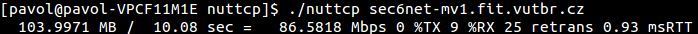
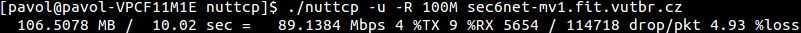

Nuttcp
Nástroj vznikol z pôvodnej BSD utility Ttcp, ktorá bola vyvinutá v 80. rokoch 20. storoèia. Úpravou a roz¹irovaním tohto nástroja vzniklo viacero projektov: Nttcp a Nuttcp. My sme sa rozhodli pou¾i» Nuttcp, preto¾e ponúka naj¹ir¹ie mo¾nosti testovania. Jeho prednosti, ktorými sú jednoduchos» a funkcionalita ho autori pova¾ujú za najlep¹í dostupný open source nástroj na meranie parametrov sie»ového prenosu. Ako jediný z testovaných utilít obsahuje implementáciu v jednom zdrojovom texte.Zdroje a základne spustenie
Domovská stránkaManuál
Link na stiahnutie - Pou¾itá verzia 7.2.1
Architektúra klient-server, nuttcp, nuttcp -S.
Príklad základného spustenia klienta a servera:
$ nuttcp <adresa>
$ nuttcp -S --nofork
Príklad prelo¾enia
cc -O3 -o nuttcp nuttcp-7.2.1.c
Uká¾ka testov
Test TCP priepustnosti.
$ nuttcp adresa

Test UDP priepustnosti do hodnoty 100 Mbps.
$ nuttcp -u -R 100M adresa

Nekorektné správanie
Neschopnos» spusti» testovanie pod protokolom IPv6. Klientská èas» aplikácie niekedy nebola schopná nadviaza» spojenie. Túto chybu je mo¾né potlaèi» pou¾itím prepínaèa
-4, ktorý vynúti
pou¾itie sie»ového protokolu IPv4.
Vybrané prepínaèe
| Parameter | Popis |
|---|---|
| Spoloèné prepínaèe | |
-p <èíslo> |
èíslo portu |
-v |
doplnkové výpisy |
-4 |
pou¾itie IPv4 |
-6 |
pou¾itie IPv6 |
| Prepínaèe pre klienta | |
-r |
prevedie testovanie od servera ku klientovi |
-u |
pou¾itie protokolu UDP, testuje priepustnos» do 1 Mbps |
-R <èíslo>[MG] |
urèí maximálnu testovanú priepustnos» |
-T <èíslo>[mh] |
då¾ka trvania testu, m - minúty, h - hodiny, bez znaèky sekundy |
-i <èíslo> |
èasový interval výpisov merania |
| Prepínaèe pre démona | |
-p <èíslo> |
èíslo portu |
-S |
spustí démona |
--nofork |
program sa spustí na popredí |